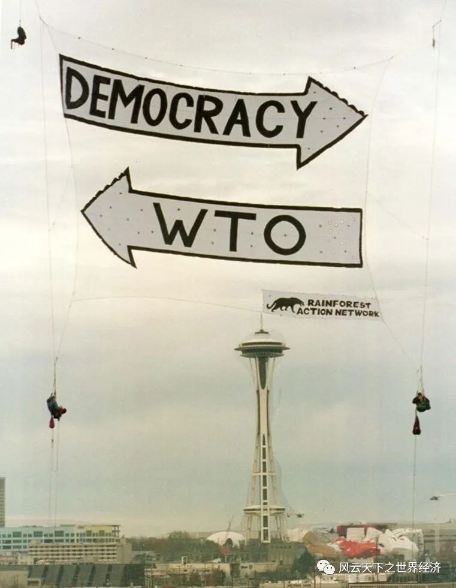
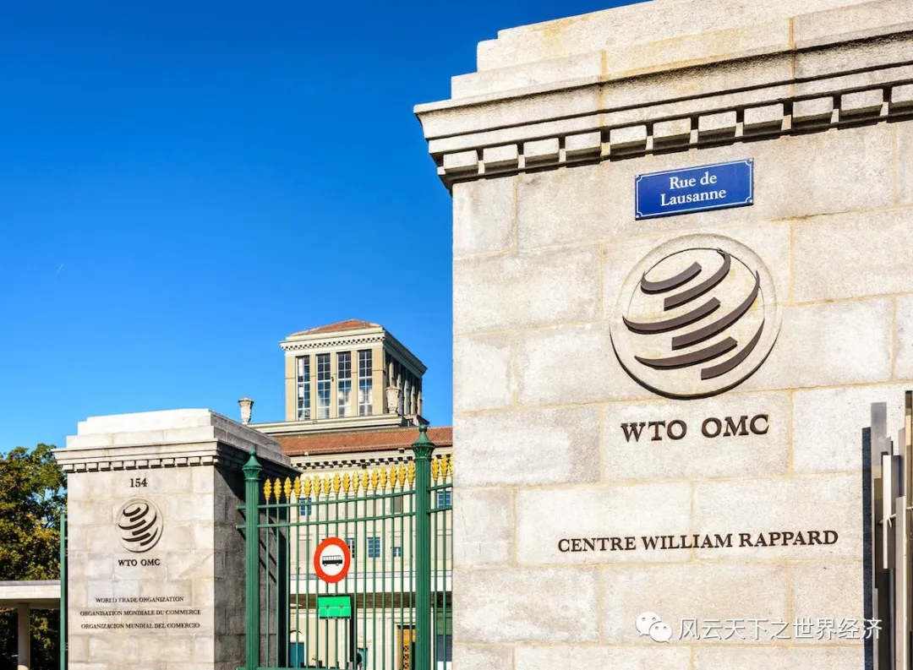
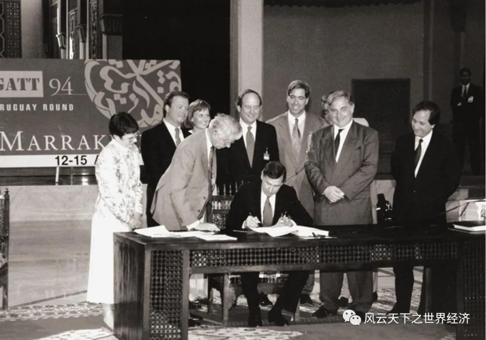

如果没有发生在西雅图的那一场骚乱，20世纪经济也许会有一个更加美好的结尾。
此时，来自哈耶克和弗里德曼的自由放任经济治理思想在经历了70年代的争论之后，已经彻底占据了舆论和政策的高地；互联网革命带动科技产业催生的美国新经济高歌猛进，20世纪最后一年的美国实际GDP增速达到了惊人的4.2%；由于贸易和投资壁垒的显著下降，跨国公司正忙于在全球范围内配置一个高效的供应链；亚洲从金融危机的余悸中逐渐觉醒，复苏的迹象初现端倪；在美国和亚洲新兴经济体的推动下，1999年世界经济增长势头强劲；刚刚成立四年的世界贸易组织（WTO）踌躇满志，1999年11月15日，中美双方经过13年的艰苦谈判，终于就中国加入WTO的问题达成初步协议。这个世界上最大的发展中国家重返全球经贸规则体系指日可待，无疑是朝着自由贸易的终极目标又前进了一大步。
承载着重要使命的第三届WTO部长级会议落户西雅图，让当时的华盛顿州州长骆家辉（Gary Locke）和西雅图市长保罗·谢尔（Paul Schell）兴奋不已。因为华盛顿州自诩为全美最依赖贸易的州，而西雅图是自由贸易的典型代表。
无论从哪个角度看，西雅图这个终年多雨的城市对于全球化有着巨大的表征意义。这是北美第四大港口，也是美国最靠近加拿大的港口，五年前签订的《北美自由贸易协定》让这里变得愈加繁忙；未来的互联网商业巨头亚马逊的总部在此；波音公司让西雅图成为世界飞行器制造业中心；刚刚发布Windows98视窗系统的微软公司位于该市的雷德蒙德街区；这里也是遍布全球的咖啡业第一品牌星巴克的故乡……
但在1999年，世界却以另外一个方式记住了这个城市。
西雅图夜未眠
1999年11月29日，在来自波特兰的约翰·塞勒斯选择在西雅图市中心的一个建筑脚手架上一跃而下，随即一个巨大的横幅在他的身后展开，上面印着两个上下平行的单行道标志——一个写着“民主”、另一个写着“WTO”，而箭头则指向了相反的方向。

塞勒斯在西雅图市中心悬挂抗议1999年世界贸易组织会议的标语
因为这一独具创意的举动，塞勒斯被西雅图警察逮捕，但是很快就在第二天被保释。因为此时警察们开始忙于对聚集街头的和平抗议者发射催泪瓦斯，一场更大规模的冲突正在上演。
这一切的起因是1999年的世界贸易组织第三届部长级会议于11月30日西雅图的华盛顿州贸易会展中心召开，WTO将在这里启动雄心勃勃的新一回合的贸易谈判。
这是一场蓄谋已久的活动，因为实施方案早在几个月前就已经紧锣密鼓地酝酿了。参与者们通过当时最时尚的通讯方式互联网来传递抗议活动的信息。示威者群体包含了环保主义者、工会、原住民团体、国际非政府组织和学生等。据估计，最后走向西雅图街头的示威者不少于四万人，其规模之大令美国以往任何一次针对世贸组织、国际货币基金组织和世界银行等经济全球化相关组织的示威活动都相形见绌。
西雅图的示威者要求将环保纳入WTO谈判议题
由于西雅图警察的策略性失误，原本打算以非暴力方式进行的游行最终演变为一场暴力混战。在人群最为集中的会议中心入口，警察向聚集的人群发射催泪瓦斯和橡皮子弹。随后，无政府主义团体开始毁车砸窗，麦当劳、耐克、星巴克、宜家等被认定为具备典型“全球化”特征的跨国公司店铺成为主要的被破坏对象。这场示威活动最终造成了约 2000 万美元的财产和销售损失。
抗议活动及冲突在随后的几天持续不断。直到12月3日，WTO宣布本届会议无果而终。世界贸易组织要商谈的内容究竟是什么，以致如此“千夫所指”？本次会议代表之一，法国财政和工业部长对于本次会议的比喻或许能够透露一些真相。他说，世界经济就像是橄揽球运动，在激烈冲撞的同时还要严格遵守比赛规则。西雅图会议就是一个制定规则的会议。
但致命的问题是，主要国家的会议代表尽管有为下一个世纪的全球经济制定一套完美规则的雄心，但他们显然缺乏清晰的行动路线图。巴西外长兰普雷亚会前预言：“预先没有达成任何默契的会议将是非常复杂和难以成功的会议”。他还补充道 ：“西雅图会议是一张白纸。”
事实证明，最终在这张白纸上留下痕迹的并不是100余名贸易部长，而是数以万计的示威者。英国《金融时报》说：“抗议活动只是一种警示性信号，它表明民众对全球化力量的担忧已经达到非常令人不安的程度。”
这次活动后来被称为 "西雅图之战"，并有一个专属的事件代号——N30。虽然这并不是活动家们第一次向全球化发起挑战，但它的规模和影响标志着活动家们策略演变过程的一个决定性时刻。从结果来看，这应该是大规模街头抗议活动第一次成功地关闭了世贸组织会议，并使饱受批评的贸易谈判陷入僵局。这场本应标志着西雅图登上世界舞台的活动，却成了全球正义运动的新标杆。它让组织者们意识到“抗议活动不必再枯燥乏味”，而且活动并不一定只是一个形式，它也可以产生实质性的后果。
当然，把本次WTO部长级会议失败的原因归结到西雅图的示威者身上终究有些勉为其难。这个在历史看似颇为成功的组织本身似乎隐藏着某些更为深层次的结构性矛盾。100多名与会的部长们怀揣着各自国家的计划，但这些计划的同类项在1999年已经少到有些可怜。正如美国贸易代表巴尔舍夫斯基事后反思到：“发展中国家没有听我们在说什么，我们也没有听这些发展中国家在说什么。我们就像黑暗中行驶的两艘船擦边而过。”
WTO何以成为众矢之的
在现代社会，贸易是一项再普通不过的活动，几乎没有人能够彻底离开它而生存。但是，当这项活动跨越国界的时候，情况就变得复杂起来。
如果单纯认为是西雅图的抗议活动导致本次部长级会议无果而终，那就过于肤浅了。WTO内部也存在巨大的问题。这次会议的主旨是启动新一轮的贸易谈判，为全球贸易校准前进的罗盘，但这个使命对于刚刚成立四年的WTO来说有点过于宏大了。

位于瑞士日内瓦的WTO总部
当然，WTO的信心也并非完全无处安放，因为它承载的是47年前新秩序制定者们的万丈雄心。
1945年停战前的30年，整个世界是在战争、暴力、动荡和骚乱中度过的，“新三十年战争”以及夹杂其中的大萧条，连同臭名昭著的保护主义措施让新世界的重建者们开始反思未来全球世界的运作方式。他们认为这个联系日渐紧密的地球需要一个更加有效率的协调机制。因此，联合国、货币基金组织、国际复兴开发银行（后更名为世界银行）等国际组织纷纷建立，成为各个国家可以广泛交流和充分沟通的舞台。
1944年的布雷顿森林会议除了建立了IMF这个国际货币政策机构以外，与会各方承认有必要建立一个类似的国际贸易机构，以补充国际货币基金组织和世界银行在贸易协调功能上的不足，旨在通过一个多边框架约束成员国的贸易保护冲动，推进全球贸易自由化。1947年的联合国贸易和就业会议将这个并未成立的组织定名为国际贸易组织（International Trade Organization），并由美国及其战时盟国主持召开一系列谈判。
初战告捷。1947年4月，23个国家在瑞士日内瓦签署了《关贸总协定》，并于1948年1月1日起临时实施。该年3月，内容更加广泛且孕育着“国际贸易组织”(ITO)的《哈瓦那宪章》在古巴谈判达成，但最终由于美国认为自己的利益在《哈瓦那宪章》上并未得到充分体现而拒绝签字，这个宏大的安排最终搁浅。而之前就已经开始实施的临时协定一直“临时”到了1995年WTO成立之时。
尽管缺乏一个名正言顺的身份，但后来1947年的事实证明，《关贸总协定》取得了意想不到的成功。它协调的重点内容是货物贸易，主要是通过降低关税和取消成员国之间的配额来实现贸易自由化。关贸总协定的每个成员国都应该平等地向其他成员国开放市场，消除贸易歧视。从1947年的日内瓦到1986年的乌拉圭，八轮旨在推进贸易自由化的谈判将全球工业品的平均关税从1947年的40% 降至1993年的不到5%，缔约国总数也达到了123个。在20世纪迈向经济全球化的征途上，关贸总协定居功至伟。也许正是在这种非凡成就的激励下，一个更具野心的机构——世界贸易组织(WTO)在1995年1月1日正式成立，它将继承《关贸总协定》的光荣使命，推动整个世界朝着贸易自由化的终极目标挺进。
但是，这个新生的组织注定命运多舛，它起航不久便遭遇到了空前阻击。

1994年4月15日谈判代表在马拉喀什签署乌拉圭回合最后文件，这些谈判促成了世贸组织的成立
尽管过去 50 年在开放市场方面取得了巨大进步，但农业、纺织业和航运业等世界经济的大部分领域仍然受到高度保护，新的更具隐蔽性的贸易壁垒也不断出现。在世界各地，反倾销税、反补贴税等以“贸易救济”为理由的保护主义措施在一些敏感产品上屡试不爽，当时，仅美国一国就已经实施了大约 300 项反倾销税，甚至非法的 "自愿出口限制 "也重新出现。发达国家和发展中国家的利益诉求出现了难以调和的分化。对于美国和欧盟的高额农产品补贴，巴西印度等农产品发展中大国一直耿耿于怀。而在服务业方面，发达国家对于发展中国家在金融、计算机、运输、电信以及人员流动的限制也是怨念已久。
显然，解决这些棘手的问题已经远远超过了WTO的能力所及。
WTO所倡导的多边框架是以美国为主导建立起一种秩序，尽管它是在吸取20世纪头四十年的教训之上建立的。它在高效运转了50年后已经疲态渐显，进入边际价值递减的轨道。与1950年相比，全球贸易总额已经增长了15倍，经济总量增加了6倍。新的贸易问题层出不穷，要协调如此庞大且复杂的事项，WTO显然力有不逮。在新的世纪，在多哈，在坎昆，在香港，在釜山，它一次又一次地复现西雅图设定的悲情命题。
目前这个组织及其分支机构依然遍布全球，但是它的实际寿命已然终结。句点就画在1999年的西雅图。
西雅图离达沃斯有多远？
达沃斯是瑞士东南部的一个小镇，作为阿尔卑斯山区规模最大、海拔最高的滑雪胜地，这里每年吸引大量的滑雪运动爱好者。
美丽的滑雪胜地达沃斯
但这个地方真正具有国际影响力还是在1971年以后。这一年，日内瓦大学商业学教授克劳斯·施瓦布倡议举办了第一次达沃斯会议，1987年正式更名世界经济论坛，目标是“致力于改善世界经济状况”。每年在1月份举行的年会上，来自全球工商业、政治、学术、媒体等领域的领袖人物都会在此聚首，讨论世界所面临的最紧迫问题。
自成立以来，达沃斯论坛就成为全球化最坚定的支持者。无论遇到何种艰难，这些全球化的赢家们似乎总有一种屏蔽不和谐声音的特异功能，始终如一地表达着对全球化的积极乐观心态。
2000年1月27日，世界经济论坛第30届年会在这里如期举行。也许是对西雅图的混乱气氛心有余悸，美国《新闻周刊》在会前不无忧虑地说，世界经济的发展就像是滑雪运动，快速而刺激，而旁观者总是担心它会出什么事故。
这是新千年的首届年会，30多个国家的政府首脑、数十名部长及包括戴尔公司总裁戴尔、美国在线的史蒂夫·凯斯在内的1200多名工商界领袖和650多名记者，共3500多人云集于此。全球最引人注目的两个比尔都来了，一个是当时的世界首富——美国微软公司的比尔·盖茨，另一个是时任美国总统比尔·克林顿。
虽然没有收到论坛的正式邀请函，但在会场外一个更大的群体也来了，他们中的很多人是从西雅图转战至此的反全球化人士。这一次他们把矛头指向了主导本轮全球化的美国。在克林顿发表演讲的会场附近，约2000名示威者高举着“克林顿滚回去！”的旗帜。还有一些抗议者打碎了一家麦当劳餐厅的玻璃，砸烂了几辆汽车，他们还在各国政要下榻的酒店门前焚烧美国国旗。
而克林顿的演讲中丝毫没有照顾到这些愤怒的情绪，他秉持的仍然是精英人士的那套说辞——全球化跨越了国界，打碎国家间壁垒，使经济运行方式发生革命性变革，国家与个人之间、经济与文化之间的障碍正在消除。在过去的几十年中，只有推崇国际贸易自由化的国家才真正获得了成功，并踏上了富裕之道。开放市场和自由贸易是促使全球经济繁荣的最好方式。
在世界经济论坛上高谈阔论的美国总统比尔·克林顿
按照经济学家理查德·鲍德温在《失序：机器人时代与全球大变革》一文中对全球化的阶段划分，此时的世界经济正处在全球化3.0版本快速形成的过程中。在交通、信息和通讯技术革新的加持下，贸易的成本快速下降，以生产分割为特征的跨国供应链体系建立起来。对此，Arvind Subramanian称之为超全球化，Gary Gereffi称之为全球价值链革命，Alan Blinder称之为离岸外包。在这个世代，产品的国家属性逐渐淡化，美国的耐克、德国的阿迪达斯、日本的丰田汽车，这些曾经无比准确的表述开始变得模棱两可。因为生产过程在全球的地理分离，使得中间品开始取代最终品成为贸易的主体。一个高科技与低工资相结合的制造业新世界在20世纪的最后一个十年逐渐浮出水面。这种新的组合不仅扰乱了那些努力与高工资和高科技竞争的工人生活，同时也给那些努力与低工资和低技术竞争的工人带来影响。富国、穷国以及被全球化卷集其中的各类人群迅速分化成两个阵营，赢家叫做达沃斯人，而输家叫做西雅图人。
2008年诺奖得主、美国经济学家克鲁格曼说，“达沃斯人”和“西雅图人”的想法都是全球化的产物，从长远来看，全球化往往会为参与者带来富裕；但从短期来看，全球化引起的变革则会让人陷入困顿。“达沃斯人”看到长期的好处，“西雅图人”看到这种变革的短期成本。
从西雅图到达沃斯的飞行距离是8563公里，但是对这两类人来说，他们之间好似横亘着万水千山一样遥不可及。
这两个先后召开的国际会议仅仅相隔了59天，但是却横跨了两个世纪。
留给新世纪的谜题
1999年11月30日，在这个世纪即将走完的时刻，一种叫做“反全球化”的思潮和行动席卷而来，把这个世界送入新的世纪。对于“经济世界里不同角落的人该如何相处”这个问题，尽管这个世纪的人们做出了卓绝的努力，也在某些领域取得了巨大的成功，但是存在的问题依然比已经解决的问题要多得多。
千禧年的晨曦即将照射过来，光线所及，既有西雅图，也有达沃斯。